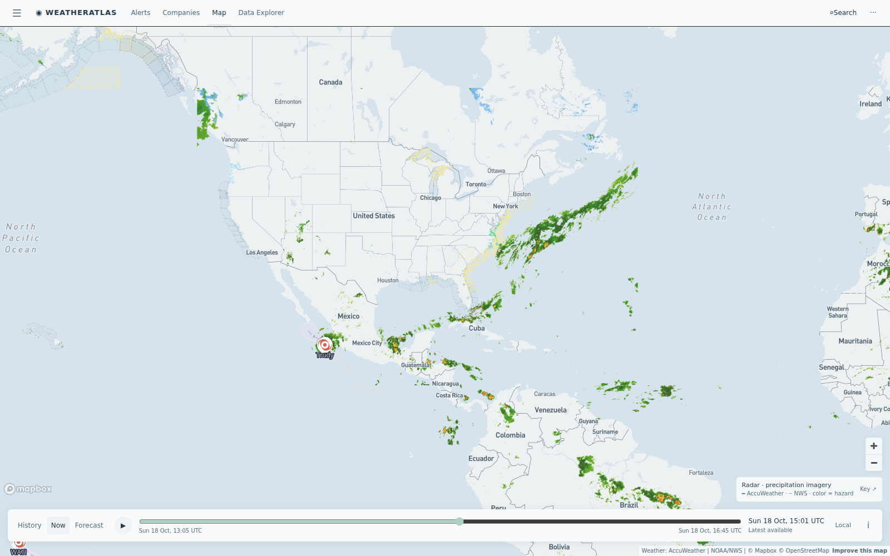

Daily severe-weather intelligence for LNG, refining, offshore, and terminal operators.

Live radar + active alert board from the AccuWeather-powered Atlas — captured ~15:00 UTC today.
| System / region | Status | Energy-asset impact |
|---|---|---|
| High pressure — US Gulf coast marine zones | FAVORABLE | Quiet Sunday across Cameron–Sabine, Port Fourchon, and Corpus corridors; residual Small Craft Advisories and Gale Watch zones linger on the central Gulf (Pensacola–Pascagoula) marine areas. Loading and crew-change windows run clean through the weekend. |
| Tropical Depression Trudy — inland Mexico (Pacific side) | FADING | Trudy has weakened to a 23-mph depression over mainland Mexico; residual heavy-rain flood risk near west-coast port zones. Mexico Pacific port ops normalize; US Gulf energy coasts unaffected. |
| Violent Typhoon CHAMPI — NW Pacific near Guam/Marianas (104 mph) | TYPHOON WATCH | CHAMPI (max sustained ~104 mph, gusts to Cat 4-equivalent per regional trackers) tracks WNW near 13.5°N 141°E — Guam/Mariana lanes first, then a likely Luzon-Strait approach midweek. Elevated seas on Asia–US LNG shipping lanes; Bintulu/South China Sea production stays outside the cone for now. Japan/Korea terminal windows watch the bend. |
| Central Gulf Gale Watch — Pensacola–Pascagoula marine zones | GALE WATCH | NWS Gale Watch + Small Craft Advisory covers the eastern Gulf coastal waters (Pensacola FL to Pascagoula MS out 20 NM and beyond) — offshore oil & gas fields in that corridor (Main Pass, Mobile-area assets) face Monday-morning marine-ops holds. |
Today's gap comes from the Malaysia Bintulu LNG complex, the world's largest single-site LNG cluster, on a CHAMPI-weekend watch night. AccuWeather's overnight hourly runs 20–25% rain with a clean pre-dawn loading window; the free feed smears 41–71% drizzle across the whole night — unusable for jetty stand-down calls.
CHAMPI-weekend watch: AccuWeather shows a quiet overnight (20–25% rain) with a clean pre-dawn loading window, 87°F by late morning; the free feed smears 41–71% drizzle across the night. Monsoon shoulder season + typhoon-lane seas make hour-by-hour the only usable product.
View live brief →Quiet high-pressure Sunday: clean loading and crew-change windows all day; the central-Gulf Gale Watch stays east (Pensacola–Pascagoula). Brief refreshed Oct 17.
View live brief →